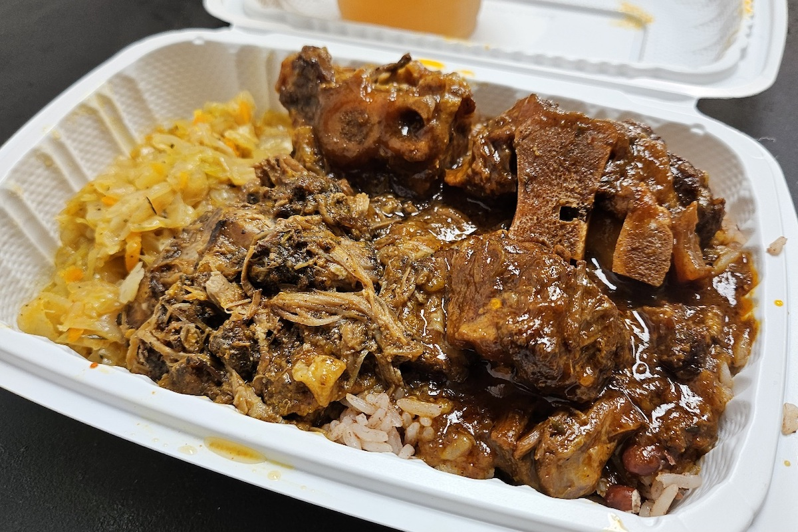
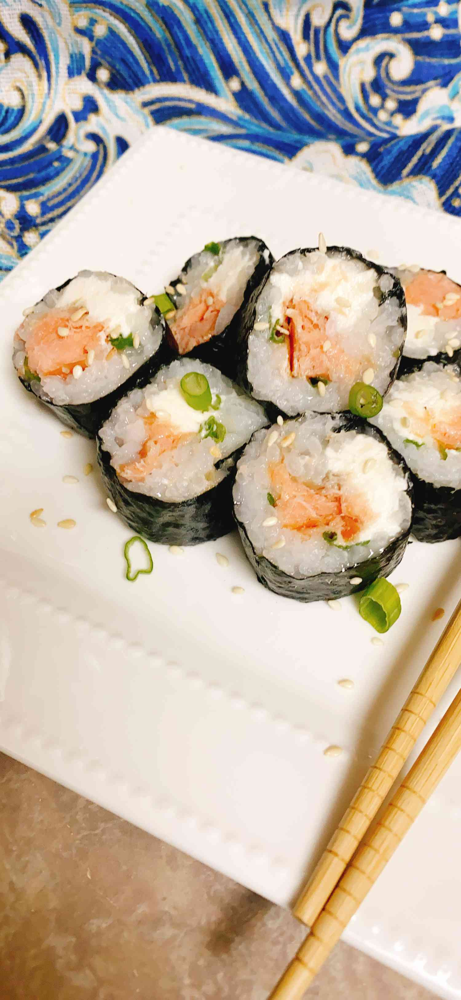
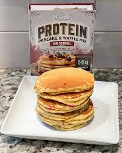
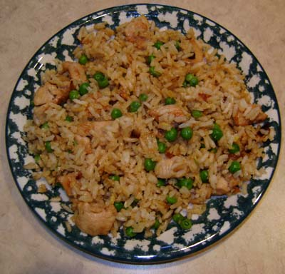
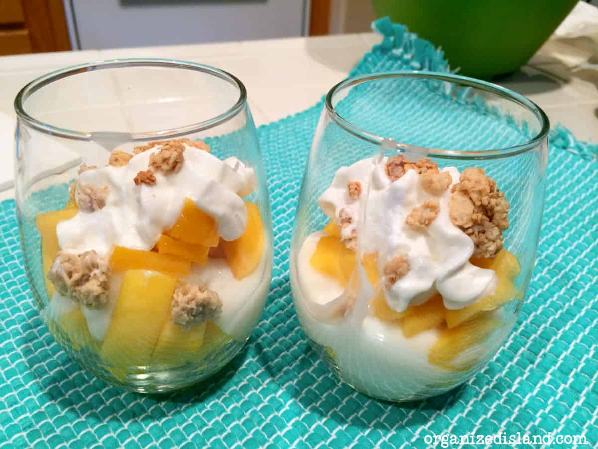
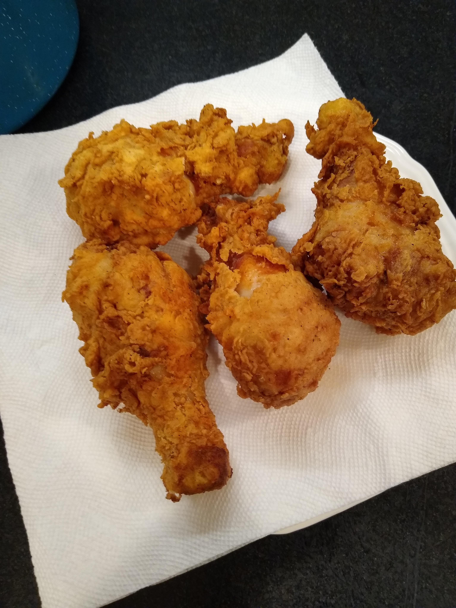

Hey everyone! I just cooked up a batch of jerk oxtail, and let me tell you, it was out of this world! I had to share the recipe because it's a game changer. If you're a fan of bold flavors, this one’s for you.
 Platter
Platter
islandFlavor - Delicious Jerk Oxtail Recipe!

seafoodLover - Perfectly Baked Salmon!

Just cooked up a pan-fried salmon dish that turned out absolutely amazing, and I couldn't resist sharing the recipe with you all. If you love a quick, flavorful dinner, this one’s a must-try!
phoMaster - Authentic Beef Pho Recipe!

After a long-weekend in Hanoi when I ate pho literally three times a day, I was determined to find a way to recreate this delicious pho soup of Vietnam in my kitchen without having to spend five hours slaving over the soup. So I created this kitchen hack - quick and easy pho recipe that's fire.
sushiFanatic - Fresh California Roll!

Hey foodies! I had a sushi night at home and whipped up some delicious California rolls that turned out amazing! 🥑🍚 If you’re looking to impress your friends or just treat yourself, this is the way to go. Here’s how I made them!
breakfastBaker - Protein Pancake Delight!

Fluffy, delicious stacks of goodness that combine the indulgence of traditional pancakes with a powerful protein boost, making them the perfect fuel for a nutritious breakfast or post-workout treat.
wokWizard - Savory Chicken Fried Rice!

A savory, colorful dish where tender chicken and fluffy scrambled eggs mingle with vibrant vegetables and perfectly cooked rice, creating a satisfying meal that’s both comforting and bursting with flavor.
tropicalTreats - Refreshing Mango Parfaits!

Layered some fresh mango chunks with yogurt and granola for a delicious and refreshing mango parfait! Perfect for breakfast, dessert, or a snack. It's light, fruity, and incredibly easy to make. If you're a mango lover, you have to try this!
crispyCraver - Ultimate Crispy Fried Chicken!

Cooked up a batch of crispy, juicy fried chicken today! The perfect blend of seasonings and a crunchy crust makes this a must-try for all chicken lovers. Pair it with your favorite sides, and you've got a delicious, crowd-pleasing meal ready to go!
Comments for Jerk Oxtail
spicyLover (Sep 26, 2024): Looks mouth-watering! I'm a big fan of jerk spices.
foodieKing (Sep 27, 2024): Can't wait to try this out. Any tips on the marinade?